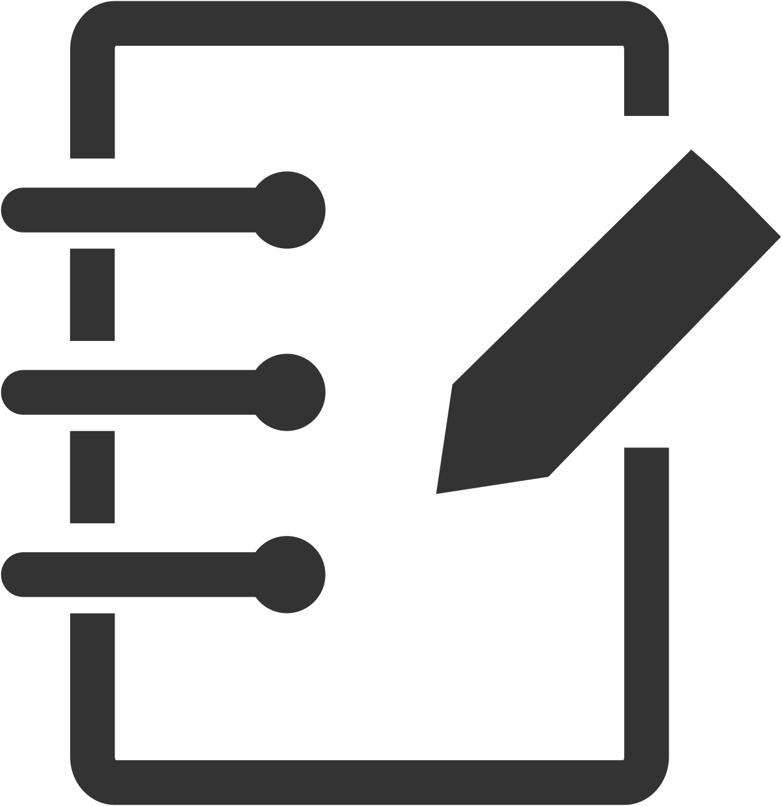
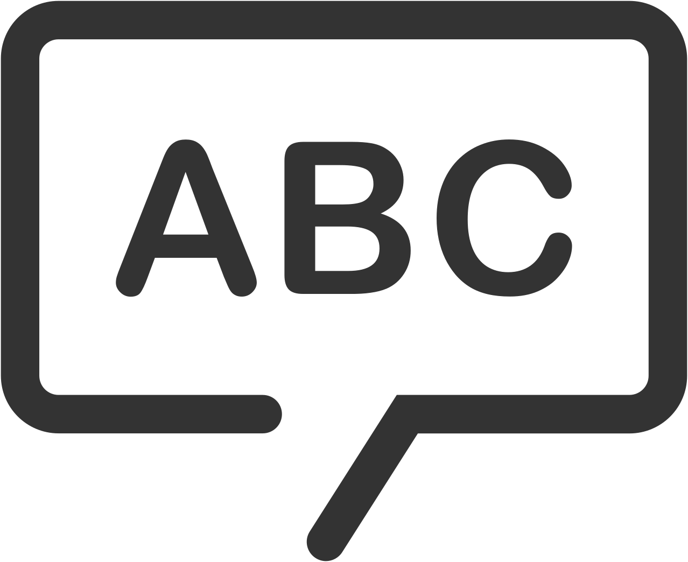
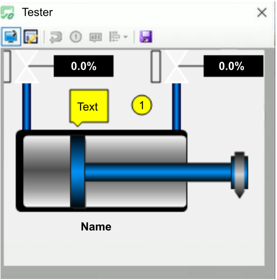

5. Write Documentation for Elements
The function blocks created in a project as well as the system, applications, resources, and so on, can be supplemented with custom documentation, to make the properties and details of the element evident for other users. Documentation is input in the Documentation editor.
Creating Images of HMI Symbols or Faceplates
For CATs, there is also the option to create an image of the HMI symbol or faceplate using a Test Container. The image can be labelled with numbers and text, then inserted into the documentation for illustration purposes.
To create an image:
-
Start the Test Container by clicking on the Run icon
 from the symbol bar. A description of this function can be found in Test Container for CAT HMI.
from the symbol bar. A description of this function can be found in Test Container for CAT HMI.
-
Within the Test Container, switch from Runtime mode to Describe mode

. -
Add comments to the Test Container image using the Bubble icon

and numbering using the Number icon .You can click on the Reset Description icon to remove all comments and numbering.
The Alignment icon
 moves the object within the test window to the desired position (if the window has been increased before):
moves the object within the test window to the desired position (if the window has been increased before):

-
Click the Save Image icon to save the image. The Save Image dialog opens.
-
Name the image and set the image file type, then click OK to store the image in the subfolder IEC61499/Images within a folder named after the CAT.
The image can now be used in the documentation of the CAT:
-
Open the Documentation editor.
-
Click the Image icon .
-
In the Insert Image dialog, select the Specific for CAT tab, and select the image.